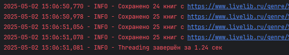
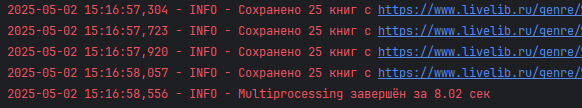
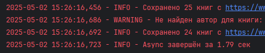

Параллельный парсинг веб-страниц с сохранением в базу данных
Задача: Напишите программу на Python для параллельного парсинга нескольких веб-страниц с сохранением данных в базу данных с использованием подходов threading, multiprocessing и async. Каждая программа должна парсить информацию с нескольких веб-сайтов, сохранять их в базу данных.
Парсер
from typing import Optional
import requests
from bs4 import BeautifulSoup
from sqlmodel import SQLModel, Field, Session
GENRE_URLS = [
"https://www.livelib.ru/genre/%D0%A1%D0%BE%D0%B2%D1%80%D0%B5%D0%BC%D0%B5%D0%BD%D0%BD%D0%B0%D1%8F-%D0%A0%D1%83%D1%81%D1%81%D0%BA%D0%B0%D1%8F-%D0%BB%D0%B8%D1%82%D0%B5%D1%80%D0%B0%D1%82%D1%83%D1%80%D0%B0",
"https://www.livelib.ru/genre/%D0%A0%D1%83%D1%81%D1%81%D0%BA%D0%B0%D1%8F-%D0%BA%D0%BB%D0%B0%D1%81%D1%81%D0%B8%D0%BA%D0%B0",
"https://www.livelib.ru/genre/%D0%97%D0%B0%D1%80%D1%83%D0%B1%D0%B5%D0%B6%D0%BD%D0%B0%D1%8F-%D0%BA%D0%BB%D0%B0%D1%81%D1%81%D0%B8%D0%BA%D0%B0",
"https://www.livelib.ru/genre/%D0%97%D0%B0%D1%80%D1%83%D0%B1%D0%B5%D0%B6%D0%BD%D1%8B%D0%B5-%D0%B4%D0%B5%D1%82%D0%B5%D0%BA%D1%82%D0%B8%D0%B2%D1%8B",
"https://www.livelib.ru/genre/%D0%A0%D1%83%D1%81%D1%81%D0%BA%D0%B0%D1%8F-%D0%BB%D0%B8%D1%82%D0%B5%D1%80%D0%B0%D1%82%D1%83%D1%80%D0%B0-%D0%B4%D0%BB%D1%8F-%D0%B4%D0%B5%D1%82%D0%B5%D0%B9",
"https://www.livelib.ru/genre/%D0%A2%D1%80%D0%B8%D0%BB%D0%BB%D0%B5%D1%80%D1%8B"
]
class BookParsed(SQLModel, table=True):
id: Optional[int] = Field(default=None, primary_key=True)
name: str = Field(index=True)
author: str = Field(index=True)
year: int
publisher: str
def parse_genre_page(url: str, engine = None):
try:
if engine is None:
engine = init_db()
logger.info(f"Парсинг страницы: {url}")
headers = {
'User-Agent': 'Mozilla/5.0 (Windows NT 10.0; Win64; x64) AppleWebKit/537.36'
}
response = requests.get(url, headers=headers, timeout=10)
response.raise_for_status()
soup = BeautifulSoup(response.text, 'html.parser')
books = []
for book_item in soup.find_all('div', class_='book-item__inner'):
book = parse_book(book_item)
if book:
books.append(book)
with Session(engine) as session:
session.add_all(books)
session.commit()
logger.info(f"Сохранено {len(books)} книг с {url}")
except Exception as e:
logger.error(f"Ошибка при парсинге {url}: {str(e)}")
def parse_book(book_item) -> Optional[BookParsed]:
try:
title_elem = book_item.find('a', class_='book-item__title')
if not title_elem:
logger.warning("Не найдено название книги")
return None
title = title_elem.text.strip()
author_elem = book_item.find('a', class_='book-item__author')
if not author_elem:
logger.warning(f"Не найден автор для книги: {title}")
return None
author = author_elem.text.strip()
edition_table = book_item.find('table', class_='book-item-edition')
year = None
publisher = None
if edition_table:
year_row = edition_table.find('td', string='Год издания:')
if year_row:
year_td = year_row.find_next_sibling('td')
if year_td:
year_str = year_td.text.strip()
if year_str.isdigit():
year = int(year_str)
else:
logger.warning(f"Некорректный год издания: '{year_str}' для книги: {title}")
publisher_row = edition_table.find('td', string='Издательство:')
if publisher_row:
publisher_td = publisher_row.find_next_sibling('td')
if publisher_td:
publisher_link = publisher_td.find('a', class_='lists-edition__link')
if publisher_link:
publisher = publisher_link.text.strip()
else:
publisher = publisher_td.text.strip().split(',')[0].strip()
if not all([title, author, year, publisher]):
logger.warning(f"Неполные данные для книги '{title}'")
return None
return BookParsed(name=title, author=author, year=year, publisher=publisher)
except Exception as e:
logger.error(f"Ошибка при парсинге книги: {str(e)}", exc_info=True)
return None
Реализован парсинг сайта https://www.livelib.ru/. Собран список страниц каталога, содержащих
книги различных жанров. С помощью requests и BeautifulSoup со страницы жанра парсятся отдельные
книги, среди информации о которых выделяется название, автор, издательство и год издания.
Посредством session.add_all(books) и session.commit() список собранных книг сохраняется в БД.
threading
import threading
import time
def threading_approach():
start_time = time.time()
engine = init_db()
threads = []
for url in GENRE_URLS:
thread = threading.Thread(target=parse_genre_page, args=(url, engine, ))
threads.append(thread)
thread.start()
for thread in threads:
thread.join()
logger.info(f"Threading завершён за {time.time() - start_time:.2f} сек")
if __name__ == "__main__":
threading_approach()

Используемый подход:
- Главный поток создает и запускает рабочие потоки
- Каждый поток обрабатывает отдельный URL
- Пока один поток ожидает ответа от сервера, другие могут работать (I/O-операции (сеть/БД))
multiprocessing
import multiprocessing
import time
def multiprocessing_approach():
start_time = time.time()
init_db()
multiprocessing.set_start_method('spawn', force=True)
processes = []
for url in GENRE_URLS:
process = multiprocessing.Process(
target=parse_genre_page,
args=(url,)
)
processes.append(process)
process.start()
for process in processes:
process.join()
logger.info(f"Multiprocessing завершён за {time.time() - start_time:.2f} сек")
if __name__ == "__main__":
multiprocessing_approach()

Используемый подход:
- Каждый процесс работает в отдельном интерпретаторе Python
- Полноценное использование всех ядер процессора
- Явное указание метода запуска (
spawn)
multiprocessing создает отдельные процессы с
собственным интерпретатором Python и памятью.
Это требует больше ресурсов: затраты на создание и уничтожение процессов,
передача данных между процессами через pickle.
Именно такие накладные расходы и заставляют программу работать намного дольше других подходов.
async
import time
import asyncio
import aiohttp
import asyncpg
from bs4 import BeautifulSoup
async def async_approach():
conn = await asyncpg.connect(DB_URL)
await conn.execute('''
CREATE TABLE IF NOT EXISTS bookparsed (
id SERIAL PRIMARY KEY,
name TEXT NOT NULL,
author TEXT NOT NULL,
year INTEGER NOT NULL,
publisher TEXT NOT NULL
)
''')
await conn.close()
async def parse_genre_page(url: str, session: aiohttp.ClientSession, pool: asyncpg.Pool):
try:
logger.info(f"Парсинг страницы: {url}")
async with session.get(url) as response:
html = await response.text()
soup = BeautifulSoup(html, 'html.parser')
books_data = []
for book_item in soup.find_all('div', class_='book-item__inner'):
book = parse_book(book_item)
if book:
books_data.append((book.name, book.author, book.year, book.publisher))
if books_data:
async with pool.acquire() as conn:
await conn.executemany('''
INSERT INTO bookparsed (name, author, year, publisher)
VALUES ($1, $2, $3, $4)
''', books_data)
logger.info(f"Сохранено {len(books_data)} книг с {url}")
except Exception as e:
logger.error(f"Ошибка при парсинге {url}: {str(e)}")
start_time = time.time()
pool = await asyncpg.create_pool(DB_URL)
async with aiohttp.ClientSession() as session:
tasks = [parse_genre_page(url, session, pool) for url in GENRE_URLS]
await asyncio.gather(*tasks)
await pool.close()
logger.info(f"Async завершён за {time.time() - start_time:.2f} сек")
if __name__ == "__main__":
asyncio.run(async_approach())

Используемый подход:
- Асинхронные HTTP-запросы через
aiohttp.ClientSession - Асинхронное взаимодействие с БД через
asyncpg - Параллельная обработка через
asyncio.gather
Когда корутина достигает await (например, await session.get(url)), она приостанавливается,
и цикл переключается на другую корутину.
Не нужно создавать отдельные потоки (как в threading) или процессы (как в multiprocessing).
Всё работает в одном потоке, переключаясь между задачами, соответственно, накладные расходы минимальны.
Сравнение
| Характеристика | Threading | Asyncio | Multiprocessing |
|---|---|---|---|
| Сумма 1 млрд чисел | 35.2 сек | 34.4 сек | 18.06 сек |
| Парсинг | 1.24 сек | 1.79 сек | 8.02 сек |
| Тип параллелизма | Псевдопараллелизм (GIL) | Кооперативная многозадачность | Настоящий параллелизм |
| Использование CPU | 1 ядро | 1 ядро | Все доступные ядра |
| Потребление памяти | Низкое | Очень низкое | Высокое (копии интерпретатора) |
| Накладные расходы | Средние | Минимальные | Высокие |
| Ограничения | GIL блокирует CPU-операции | Только I/O-bound задачи | Высокое потребление памяти |
Как показало первое задание, Multiprocessing - лучший выбор для CPU-bound вычислительных задач. Сюда входят матричные умножения, обработка изображений, обучение ML-моделей, хеширование, шифрование. Multiprocessing использует несколько ядер CPU и обходит GIL, однако имеет высокое потребление памяти и накладные расходы на создание процессов.
Threading и Asyncio показывают лучшую скорость для I/O-bound задач. Среди них: парсинг веб-страниц, загрузка файлов из интернета, работа с базами данных, отправка HTTP-запросов (API), чтение/запись больших файлов на диск. Asyncio лучше масштабируется при большом количестве запросов, имеет минимальные накладные расходы, поддерживает тысячи одновременных соединений и автоматически переключает задачи.